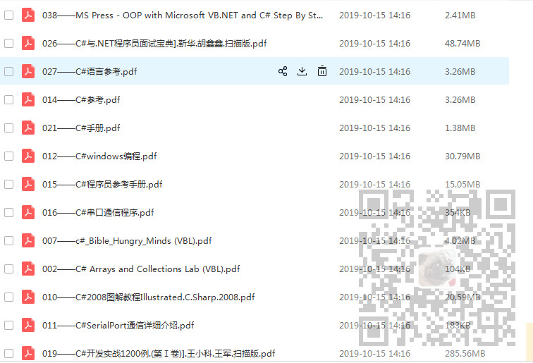

原文出处:本文由博客园博主霸道流氓提供。
原文连接:https://www.cnblogs.com/badaoliumangqizhi/p/11677541.html
原文连接:https://www.cnblogs.com/badaoliumangqizhi/p/11677541.html
场景
近期囤积了一大批编程教程和电子书资料。至于视频教程，我一般是看完之后整理成相应的博客进行记录，一般不会再云盘中进行存取，因为很占空间。
至于电子书资料，很多，就是得一点点整理归纳。
近期我的公众号：霸道的程序猿。有人留言说有没有.NET相关的技术数据，我就大体先整理了一部分，还有一些没来的及归纳整理。
后续这些都会慢慢分享给大家。
以下大约50本，大体有：
C#入门、语言规范、实例开发、面试宝典、网络应用编程、手册、开发实例、串口通信等。
后续正在整理归纳中。

注：
博客主页：
https://blog.csdn.net/badao_liumang_qizhi
关注公众号
霸道的程序猿
获取编程相关电子书、教程推送与免费下载。
另外，如果有啥资源失效或者有啥需求尽量在最近的文章中留言，如果直接发消息，超过48小时就不能回复了。
实现
关注公众号：
霸道的程序猿
回复：C#电子书
免费下载。